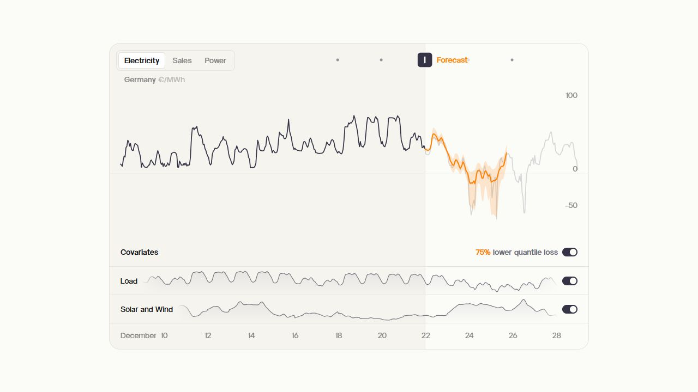
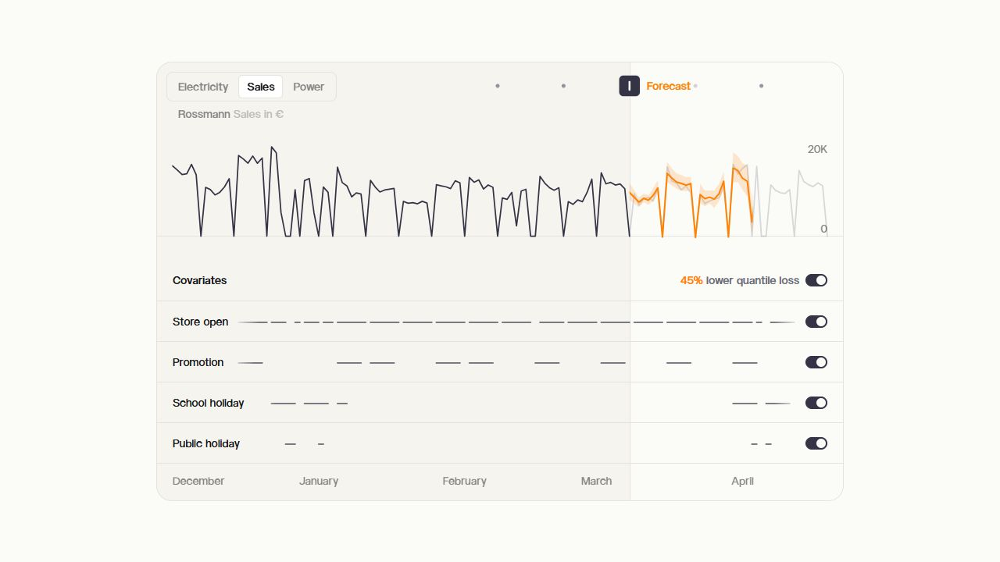

미스트랄 AI, 다음 숫자를 예측한다
미스트랄이 10월 15일 숫자 예측 모델 Timestral을 공개했다. 글을 써 주는 챗봇과 달리, 날짜나 시간 순서로 쌓인 관측값을 받아 앞으로의 흐름을 추정한다. 매일의 판매량, 시간대별 전력 사용량, 공장 센서 수치처럼 반복해서 기록하는 자료가 대상이다. 공식 발표

사업장에서 “다음 주에는 얼마나 준비해야 할까”라는 질문은 자주 나온다. 지난해 숫자를 그대로 쓰기도 어렵고, 담당자의 감에만 기대기도 부담스럽다. Timestral은 이런 판단에 쓸 예측값을 만드는 도구다. 무엇을 얼마나 준비할지 결정하는 책임까지 모델이 가져가는 것은 아니다.
문장 대신 시간순 숫자를 넣는다
보통 챗봇에는 질문을 입력하지만, Timestral의 공식 실행 예시는 숫자 배열을 입력으로 사용한다. 여러 항목을 함께 예측할 수 있고, 관측값이 빠진 구간도 구분한다. 결과는 하나의 숫자뿐 아니라 21개 분위수로 나온다. 분위수는 예측 분포에서 어느 위치의 값인지 나타내며, 결과가 퍼질 수 있는 범위를 살피는 데 쓰인다. 공식 실행 예시
쉽게 말해 “내일 판매량은 100개”라는 답만 받는 대신, 예상보다 적거나 많을 가능성까지 살피는 방식이다. 여기서 100개는 이해를 위한 가상 숫자다. 실제 판매 자료를 넣어 얻은 Timestral 결과가 아니다. 범위가 넓게 나온다면 재료를 많이 준비하는 선택과 품절을 감수하는 선택의 부담을 따로 따져야 한다.
관련 있는 숫자를 함께 보는 기능도 있다. 매장 방문자 수와 판매량, 설비의 온도와 진동처럼 서로 연결된 기록이 예다. 다만 함께 움직였다는 사실로 원인이 밝혀지는 것은 아니다. 온도가 오를 때 고장이 늘어났더라도, 정비가 필요한 이유는 실제 설비 상태와 함께 확인해야 한다.


휴일처럼 미리 아는 정보를 더할 수 있다
예측에는 과거에만 알 수 있는 값과 미래에도 미리 아는 값이 있다. 어제 판매량은 전자이고, 다음 주 공휴일이나 예정된 휴무일은 후자다. Timestral은 이 둘을 구분해 입력할 수 있다. 공식 문서는 요일이나 장비 상태처럼 종류를 나타내는 값도 처리하는 방법을 제공한다.
예를 들어 금요일마다 방문자가 늘지만 다음 금요일은 휴무라고 하자. 판매 이력만 주면 최근 금요일의 패턴이 강하게 보일 수 있다. 예정된 휴무를 함께 알려 주는 입력은 이런 상황을 다루기 위한 것이다. 이것은 기능의 용도를 설명한 예이며, 특정 매장에서 정확도가 올랐다는 사례는 아니다.
가장 조심할 것은 예측하려는 미래의 정답을 실수로 입력에 섞는 일이다. 다음 주 매출을 시험하면서 다음 주 실제 판매량까지 넣으면, 시험 점수는 좋아도 실제 업무에서는 재현할 수 없다. 자료를 만든 날짜와 그때 알 수 있었던 정보를 함께 남겨야 한다.
큰 GPU 없이도 실험할 수 있는 구성
모델은 500만·2,800만·1억2,300만·2억900만 매개변수의 네 가지로 제공된다. CPU나 GPU로 실행할 수 있고, 가장 작은 모델의 가중치 파일은 약 21MB, 가장 큰 모델은 약 837MB다. 이 숫자는 파일 크기이며 실행 중 전체 메모리 사용량을 뜻하지 않는다. 배포 모델과 파일 크기
작은 모델부터 비교할 수 있다는 점은 반복 예측 업무에 의미가 있다. 매장 하나를 하루 한 번 계산하는 작업과 수천 개 센서의 값을 계속 갱신하는 작업은 필요한 처리량이 다르다. 가장 큰 모델을 고르는 것보다, 필요한 정확도와 계산 시간을 함께 확인하는 편이 현실적이다.
현재 공개된 자료는 개발자가 연결할 수 있는 모델과 실행 코드다. 엑셀에서 파일을 열면 새 예측 버튼이 자동으로 생기는 형태는 아니다. 날짜 간격, 누락값, 상품 구분을 정리하고 모델이 받는 형식으로 바꾸는 준비가 필요하다. 기존 업무 도구에 넣으려면 이 연결 작업까지 고려해야 한다.
회사 성적표와 우리 회사의 시험을 나눈다
미스트랄은 사전학습 모델을 추가 학습 없이 사용하는 비교에서 GIFT-Eval·TIME·fev-bench의 좋은 성적을 발표했다. 이는 특정 공개 평가 기준에 대한 회사의 결과다. 모든 회사의 모든 수요를 가장 정확하게 맞힌다는 보장은 아니다. 공식 모델 카드
GIFT-Eval 평가 안내도 학습 데이터와 시험 데이터가 겹치지 않는 조건을 구분한다. 숫자를 많이 맞혔다는 소개만 볼 것이 아니라 어떤 기간과 자료로 시험했는지 살펴야 한다. 모델이 이미 본 자료를 다시 맞히는 것과 새로운 미래를 예측하는 것은 난도가 다르기 때문이다.
실무 시험은 최근 몇 주를 숨겨 놓고 과거 기록만으로 예측해 보는 방식이 이해하기 쉽다. 같은 기간에 “지난주 같은 요일과 같다”는 단순 기준도 계산해 둔다. 복잡한 AI가 그 기준보다 실제로 오류를 줄였는지, 특정 휴일이나 행사에만 크게 빗나가는지 확인한다. 이는 편집부가 제안하는 검증 절차이며 직접 실행한 결과 보고가 아니다.
오류의 크기뿐 아니라 업무 손실도 봐야 한다. 남는 재고의 비용이 큰 상품과 품절 손실이 큰 상품은 같은 오차라도 부담이 다르다. 예측 범위를 제공하는 기능은 이런 판단에 참고가 되지만, 범위가 실제 결과를 얼마나 잘 포함하는지도 과거 자료로 확인할 필요가 있다.
Modified MIT의 매출 조건을 확인해야 한다
코드는 Apache 2.0이지만 모델 가중치는 Modified MIT 라이선스다. 일반적인 MIT라는 이름만 보고 제한이 없다고 판단하면 안 된다. 문서에는 직전 달 글로벌 연결 월매출이 2천만 달러를 초과한 회사, 또는 그런 고용주를 대신해 쓰는 경우에는 이 라이선스로 사용 권리를 받지 못한다는 조건이 있다.
여기서 기준은 연매출이 아니라 월매출이다. 해당 기업은 별도 상업 라이선스나 제공 서비스 조건을 검토해야 한다. 규모 조건에 해당하지 않더라도 저작권·라이선스 고지 등 나머지 요구는 남는다. 회사 자료로 도입을 결정하기 전에 실제 사용 주체와 적용 문서를 확인하는 것이 좋다.
예측 화면은 공식 데모에서 먼저 살펴본다
미스트랄은 발표 페이지에 공식 예측 시각화 데모를 연결했다. 선이 이어지는 방식과 예측 범위를 보여 줄 때 활용할 수 있는 원본 자료다. 공식 데모에서 전력 가격과 판매량 화면을 직접 열어 확인했다. 화면의 예측선과 범위는 회사가 제공한 예시이며, 우리가 별도 자료를 넣어 얻은 결과는 아니다.
회사 발표에는 센서 이상을 감지한 뒤 별도의 언어 AI가 정비 기록을 읽고 보고서를 쓰는 구성도 제시돼 있다. 숫자를 계산하는 모델과 설명문을 쓰는 모델을 연결하는 구상이다. Timestral 하나가 원인 조사와 정비 판단까지 모두 마친 실제 도입 사례로 받아들이면 범위가 커진다.
이번 소식에서 기억할 점은 AI가 말을 잘하는 능력과 숫자의 다음 흐름을 예측하는 능력이 다른 작업이라는 것이다. 먼저 공개 가능한 작은 자료로 과거를 숨기는 시험을 하고, 단순한 기준보다 도움이 되는지 확인한다. 좋은 결과가 나오면 그때 입력 자료와 책임 범위를 정해 업무에 연결하는 순서가 적절하다.
출처와 더 읽을 자료
- Timestral 공식 발표와 예측 시각화
- Timestral 공식 실행 코드
- Timestral-209M 공식 모델 카드
- 모델 가중치 Modified MIT 라이선스
- GIFT-Eval의 평가·데이터 중복 기준
- Mistral 공식 브랜드 자산
대표 이미지는 제품명과 기사의 핵심을 편집부가 배치한 설명용 표지이며 실제 제품 화면이 아니다. 본문의 원본 화면·영상은 각 자료 아래에 출처와 제공 주체를 표시했다. 직접 실습하지 않은 회사 시연을 편집부의 실행 결과로 표시하지 않았다.